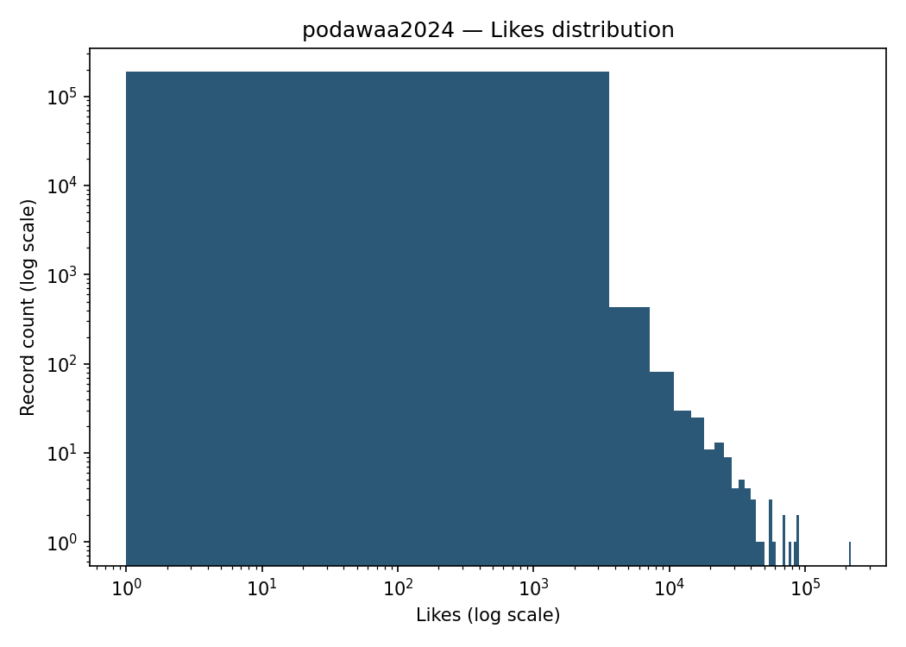
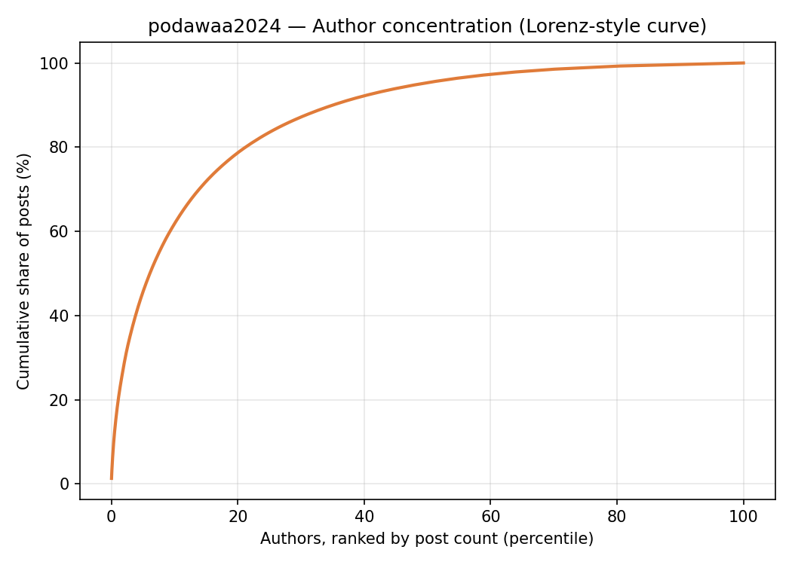
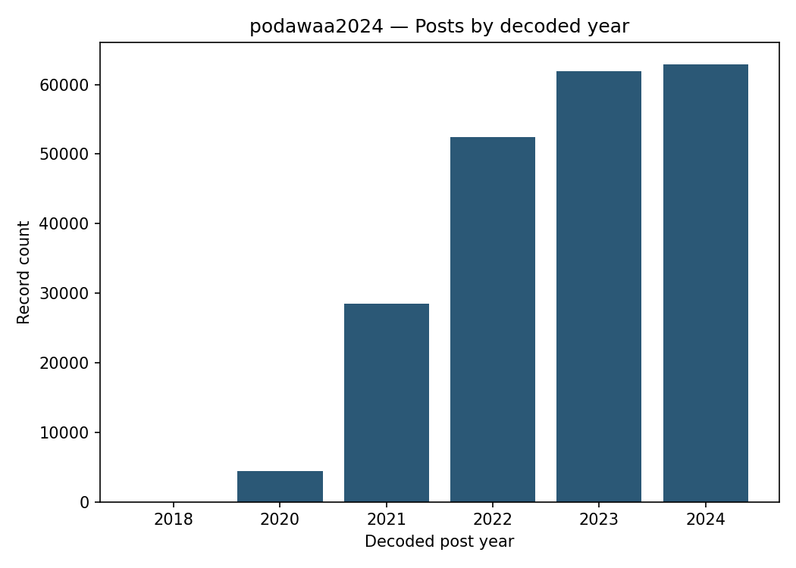
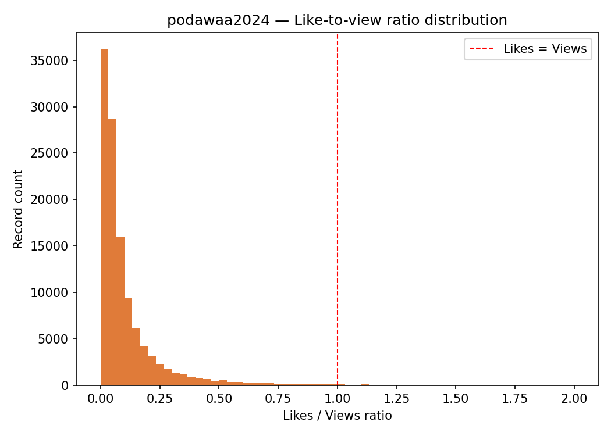
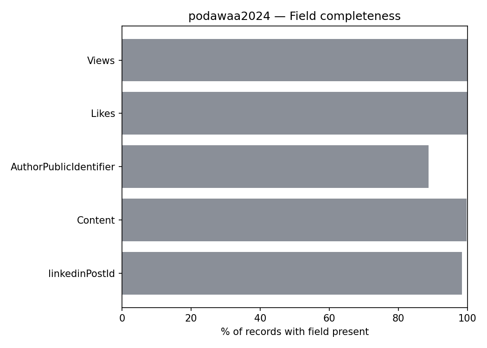
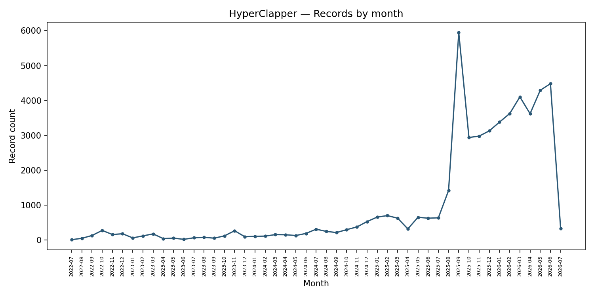
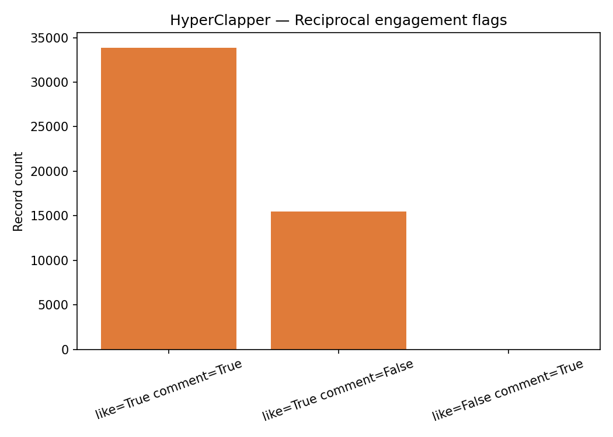
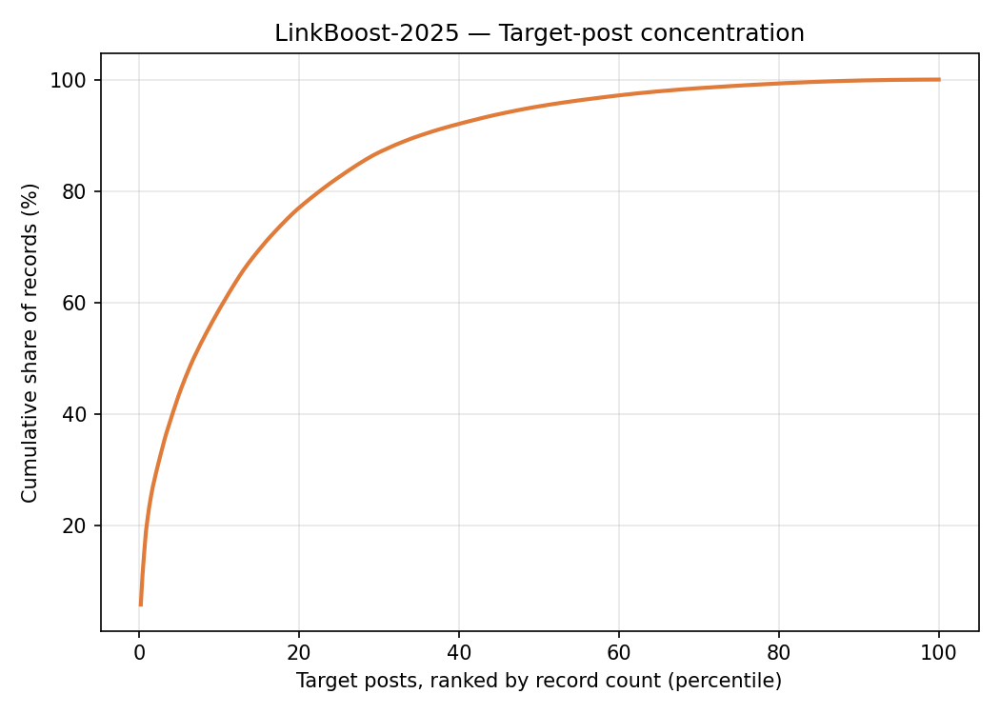
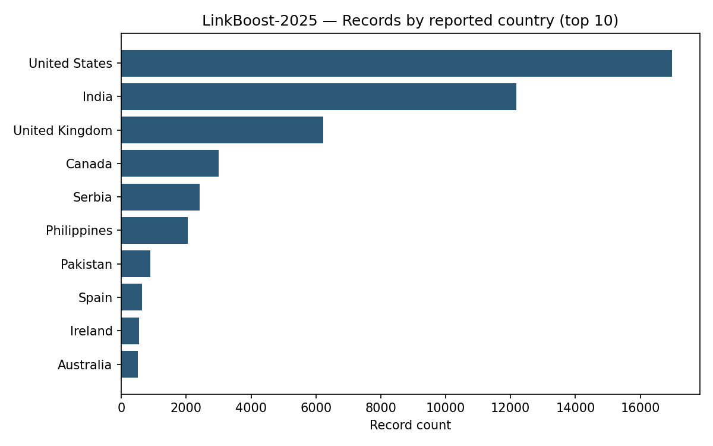
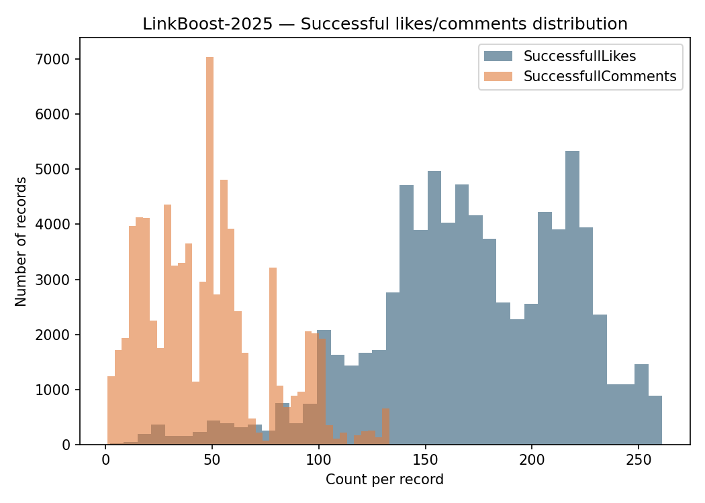

Aggregate figures across three datasets, computed directly from the source files. Nothing on this page can be searched, filtered, or traced back to a specific account.
No per-record lookup. This page shows population-level statistics only — the same numbers already published in the main README and baseline profile. See limitations.md for why this repo doesn't build a searchable identity tool, and explorer/README.md for how this differs from the SPOTAPOD explorer it takes structural cues from.
podawaa2024
213,491records
7,033unique authors (hashed)
44.3%zero Views
19.1%of posts from top 1% of authors

Likes distribution (log scale). VERIFIED — reproducible via analysis/profile_podawaa.py.

Author concentration — cumulative share of posts by ranked author percentile.

Posts by decoded year (from Snowflake-style post ID — see method.md).

Like-to-view ratio distribution, with the likes=views line marked.

Field completeness across all five schema fields.
HyperClaper
49,369records
702unique authors (hashed)
68.6%like=true & comment=true
98.0%zero recorded impressions

Records by month — volume concentrated mid-2025 onward.

Reciprocal like/comment flag combinations. STATED signal, not author intent — see method.md.
LinkBoost-2025
77,969records
469unique target posts (hashed)
238unique operator accounts (hashed)
58.2%of records from top 10% of targets

Target-post concentration — cumulative share of records by ranked target percentile.

Top 10 reported countries.

SuccessfullLikes / SuccessfullComments distribution per record.